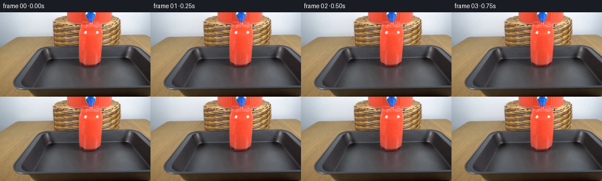
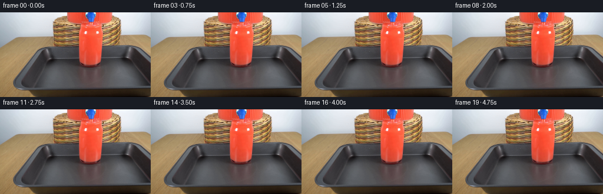

CODING AGENTS AS PIXEL WORLD MODELS
traex/GPT-6.1-Sol · 0089
点击播放 · 原生 RGB 像素
逐轮保存的候选
回放视频、检查图与代码变化。
每份候选均可单独播放。实际图片检查记录在下方工具轨迹中。
候选 01播放与检查图
点击播放 · 原生 RGB 像素


展开代码变化
--- 上一保存版本
+++ 本次保存版本
@@ -0,0 +1,116 @@
+from pathlib import Path
+import numpy as np
+from PIL import Image
+from scipy.ndimage import map_coordinates, gaussian_filter
+import artifact_io
+
+HERE = Path(__file__).resolve().parent
+H, W = 144, 256
+SS = 4
+
+def smoothstep(a, b, x):
+ u = np.clip((x-a)/(b-a), 0.0, 1.0)
+ return u*u*(3-2*u)
+
+def generate():
+ original = np.array(Image.open(HERE / 'first_frame.png').convert('RGB'), dtype=np.uint8)
+ photo = original.astype(np.float64)
+ # A photographic, immobile background, with antialiased fluid-only changes.
+ yy, xx = np.mgrid[0:H*SS, 0:W*SS].astype(np.float64)
+ x = (xx+.5)/SS-.5
+ y = (yy+.5)/SS-.5
+ base = np.stack([map_coordinates(photo[...,k], [y,x], order=1, mode='nearest') for k in range(3)], -1)
+ red = smoothstep(72,118,base[...,0]-base[...,1]) * smoothstep(160,208,base[...,0])
+ # The red cup is already almost full in the supplied photograph. The
+ # outlet is just above its lip; continuing flow raises the meniscus only
+ # a little, and drives short-scale surface ripples, rather than moving glass.
+ cup_x = smoothstep(135.5,141.0,x)*(1-smoothstep(166,173,x))
+ cup_y = smoothstep(24,28,y)*(1-smoothstep(83,88,y))
+ cup = cup_x*cup_y*red
+ # Glass reflections (including the two pale spots) are fixed in space.
+ fixed_reflect = 1-smoothstep(117,172,base[...,1])
+ core = cup*fixed_reflect
+ frames = [original.copy()]
+ for frame_no in range(1,20):
+ t = frame_no / 4.0
+ entrance = 1-np.exp(-t*8)
+ image = base.copy()
+ rise = 2.05*(1-np.exp(-t/3.1))
+ surface_y = 25.0-rise
+ # Small advected refractive striations, shaded by the existing image.
+ phase = 2*np.pi*(y/9.8 - t*1.43)
+ flow = np.exp(-((x-154.8)/8.4)**2)
+ dy = .13*np.sin(phase + .25*np.sin((x-151)*.6))*flow
+ dx = .09*np.sin(y*.37 - 8*t)*flow
+ warped = np.stack([map_coordinates(photo[...,k],[y+dy,x+dx],order=1,mode='nearest') for k in range(3)],-1)
+ image += (warped-base)*core[...,None]*entrance
+ agitation = (np.sin(y*.71-t*7.3+(x-154)*.28) + .45*np.sin(y*1.2-t*11.2))
+ agitation *= core*flow*entrance*(.65+.9*np.exp(-(y-26)/14))
+ image += agitation[...,None]*np.array([.9,1.45,1.12])
+
+ # Shift only the liquid's inner meniscus, not the clear glass lip.
+ rx = 16.6
+ lateral = np.sqrt(np.maximum(0,1-((x-154.5)/rx)**2))
+ elliptical = surface_y + .55*lateral
+ wave = .16*np.sin((x-154.5)*.62 - t*8.7) + .08*np.sin((x-154.5)*1.05+t*13.1)
+ surf_region = cup_x * smoothstep(22.5,23.5,y) * (1-smoothstep(27,29,y))
+ surf_region *= red
+ source_y = y + rise + wave*np.exp(-((y-elliptical)/2.5)**2)
+ moved = np.stack([map_coordinates(photo[...,k],[source_y,x],order=1,mode='nearest') for k in range(3)],-1)
+ image += (moved-base)*surf_region[...,None]*entrance*.48
+ # Travelling concentric capillary rings, compressed by perspective.
+ rho = np.sqrt(((x-154.5)/1.0)**2 + ((y-elliptical)/.18)**2)
+ surf_mask = np.exp(-((y-elliptical)/1.15)**2)*cup_x*red
+ rings = np.sin(1.85*rho - 12.0*t)*np.exp(-rho/11)*surf_mask
+ image += rings[...,None]*np.array([3.2,7.0,5.8])*entrance
+ rearline = np.exp(-((y-(surface_y-.35*lateral+wave))/.23)**2)*cup_x
+ image += rearline[...,None]*np.array([2.5,6.0,5.4])*entrance
+
+ # Gravity-fed jet from the existing blue tap. Its clear red edges and
+ # narrow moving white reflection are all subpixel, not an opaque tube.
+ lo, hi = 16.85, surface_y+1.25
+ jet_center = 154.25+.16*np.sin((y-17)*1.15 - t*12.5)
+ jet_radius = 1.10-.018*np.clip(y-17,0,8)
+ jet_radius += .08*np.sin(y*2.2-t*19)
+ jet_mask = (1-smoothstep(jet_radius-.3,jet_radius+.27,np.abs(x-jet_center)))
+ jet_mask *= smoothstep(lo-.2,lo+.5,y)*(1-smoothstep(hi-.35,hi+.4,y))
+ jet_color = np.zeros_like(image)
+ jet_color[...,0]=244+4*np.sin((y-17)*1.6-t*14)
+ jet_color[...,1]=83+10*np.sin((y-17)*1.3-t*14)
+ jet_color[...,2]=62+8*np.sin((y-17)*1.3-t*14)
+ image = image*(1-jet_mask[...,None]*.58*entrance)+jet_color*(jet_mask[...,None]*.58*entrance)
+ highlight = np.exp(-((x-jet_center+.34)/.19)**2)*jet_mask
+ highlight *= .65+.35*np.sin(y*2.8-t*20)
+ image += highlight[...,None]*np.array([2.5,18,16])*entrance
+ # A shallow moving dimple where the stream meets the liquid.
+ impact = np.exp(-((x-154.35)/1.55)**2 - ((y-(surface_y+.6))/.45)**2)*red
+ image += impact[...,None]*np.array([-7,-8,-4])*entrance
+ halo = np.exp(-((x-154.4)/3.0)**2-((y-(surface_y+.1))/.28)**2)*red
+ image += halo[...,None]*np.array([3,9,7])*entrance
+
+ # Air entrained by the falling liquid: a few small, transient bubbles
+ # just beneath the meniscus. They rise and vanish instead of accumulating.
+ for j in range(8):
+ age = (t + j*.19) % 1.55
+ bx = 154.4 + (j%2*2-1)*(1.0+(j%4)*.63) + .25*np.sin(t*5+j)
+ by = surface_y+9.0-age*5.8+(j%3)*.35
+ visible = smoothstep(.07,.28,age)*(1-smoothstep(1.23,1.52,age))
+ visible *= smoothstep(surface_y+.55,surface_y+1.2,by)
+ rad = .24 + .075*(j%3)
+ rr = np.sqrt(((x-bx)/rad)**2+((y-by)/(rad*.83))**2)
+ rim = np.exp(-((rr-1)/.33)**2)*visible*red
+ dark = np.exp(-(rr/.67)**2)*visible*red
+ image += (rim[...,None]*np.array([0,14,12])-dark[...,None]*np.array([7,4,2]))*entrance
+ # Faint red-light modulation in the tray's existing reflection only.
+ refl = np.exp(-((x-155)/15)**2-((y-100)/9)**2)
+ image += (refl*np.sin(t*7-y*.7)*.6*entrance)[...,None]*np.array([1,.22,.18])
+
+ # Downsample differences, adding them to the untouched exact photograph.
+ delta = (image-base).reshape(H,SS,W,SS,3).mean((1,3))
+ out = np.clip(np.rint(photo+delta),0,255).astype(np.uint8)
+ frames.append(out)
+ return np.stack(frames)
+
+if __name__ == '__main__':
+ frames = generate()
+ artifact_io.save(frames, HERE)
候选 02播放与检查图
点击播放 · 原生 RGB 像素

展开代码变化
--- 上一保存版本
+++ 本次保存版本
@@ -1,7 +1,7 @@
from pathlib import Path
import numpy as np
from PIL import Image
-from scipy.ndimage import map_coordinates, gaussian_filter
+from scipy.ndimage import map_coordinates
import artifact_io
HERE = Path(__file__).resolve().parent
@@ -37,6 +37,59 @@
image = base.copy()
rise = 2.05*(1-np.exp(-t/3.1))
surface_y = 25.0-rise
+ # Continued filling of an already near-brim glass eventually produces
+ # a thin overflow, which the baking tray catches. Lay the spreading
+ # film behind the photographic glass before rendering the stream.
+ spill_age = max(0.0, t-1.25)
+ if spill_age > 0:
+ amount = 1-np.exp(-spill_age*1.9)
+ prx = 4.0 + 17.1*np.sqrt(spill_age)
+ pry = 1.2 + 4.65*np.sqrt(spill_age)
+ pcx, pcy = 155.5, 94.8
+ nx, ny = (x-pcx)/prx, (y-pcy)/pry
+ angle = np.arctan2(ny,nx)
+ r = np.sqrt(nx*nx+ny*ny)
+ boundary = 1 + .025*np.sin(5*angle+.5) + .018*np.sin(9*angle-1.2)
+ film = (1-smoothstep(boundary-.023,boundary+.026,r))*amount
+ # Keep the upright glass and its contact edge in front of the pool.
+ cup_front = smoothstep(132,135,x)*(1-smoothstep(171,175,x))*(1-smoothstep(89,92,y))
+ film *= 1-cup_front
+ # Thin transparent scarlet liquid on the dark metal floor, with
+ # colored transmission of the original tray texture.
+ deep = np.maximum(0,1-r*r)
+ color = np.stack([base[...,0]*.30+101+17*deep,
+ base[...,1]*.30+9+4*deep,
+ base[...,2]*.32+9+3*deep],-1)
+ glint = np.exp(-((ny+.60)/.14)**2)*np.exp(-(nx/.8)**2)
+ color += glint[...,None]*np.array([20,12,11])
+ ripples = np.sin(np.sqrt((x-164)**2+((y-94)/.31)**2)*1.28-t*12)
+ ripples *= np.exp(-((x-164)/13)**2-((y-95)/3.2)**2)*2.3
+ color += ripples[...,None]*np.array([1.3,.7,.65])
+ rim = np.exp(-((r-boundary+.035)/.024)**2)
+ color += rim[...,None]*np.array([12,8,7])
+ image = image*(1-film[...,None]) + color*film[...,None]
+ # Two fine exterior runnels follow the existing taper of the cup.
+ # The front reaches the tray at a finite speed.
+ front_y = min(94.7,23+spill_age*112)
+ for side in [0,1]:
+ if side == 0:
+ center = 134.3 + 2.8*smoothstep(71,86,y) + 9*smoothstep(86,94,y)
+ radius = .47+.20*np.sin(y*.31-t*8.0)**2
+ strength=.65
+ else:
+ center = 174.15 - 2.0*smoothstep(48,81,y) - 7.7*smoothstep(81,94,y)
+ radius = .72+.25*np.sin(y*.28-t*9.1)**2
+ strength=.88
+ center += .12*np.sin(y*.49-t*10.5)
+ thread = 1-smoothstep(radius-.18,radius+.35,abs(x-center))
+ thread *= smoothstep(22.5,24.7,y)*(1-smoothstep(front_y-.8,front_y+.3,y))*amount*strength
+ red_thread = np.stack([base[...,0]*.16+173,
+ base[...,1]*.20+29,
+ base[...,2]*.23+26],-1)
+ image = image*(1-thread[...,None])+red_thread*thread[...,None]
+ gleam = np.exp(-((x-center+.23)/.15)**2)*thread
+ gleam *= .5+.5*np.sin(y*1.4-t*21)**2
+ image += gleam[...,None]*np.array([21,25,23])
# Small advected refractive striations, shaded by the existing image.
phase = 2*np.pi*(y/9.8 - t*1.43)
flow = np.exp(-((x-154.8)/8.4)**2)
候选 03播放与检查图
可观测工具轨迹
实际执行的命令与返回图片。
命令 1exit 0
/bin/bash -lc 'ls -la && cat prompt.txt && cat GENERATION_RULES.md'
命令 2exit 0
/bin/bash -lc "cat artifact_io.py && python - <<'PY'
from PIL import Image
import numpy as np
im=np.array(Image.open('first_frame.png'))
print(im.shape)
# print averaged cells using palette to indicate red, dark, white, metallic background
for y in range(0,144,3):
s=''
for x in range(0,256,3):
r,g,b=im[y:y+3,x:x+3].mean((0,1))
if r>g*1.5 and r>b*1.45 and r>60:c='R' if r>140 else 'r'
elif r>g*1.2 and r>b*1.2 and r>50:c='o'
elif max(r,g,b)-min(r,g,b)>25:c='c'
elif r<35:c='#'
elif r<70:c='@'
elif r<110:c='O'
elif r<150:c=':'
elif r<190:c='-'
elif r<220:c='.'
else:c=' '
s+=c
print(f'{y:3} {s}')
PY"命令 3exit 0
/bin/bash -lc "python - <<'PY'
import numpy as np
from PIL import Image
im=np.array(Image.open('first_frame.png'))
for y in range(0,125,2):
s=''
for x in range(80,204):
r,g,b=map(int,im[y,x])
if r>g*1.6 and r>b*1.5 and r>60:c='R' if r>155 else ('r' if r>105 else 's')
elif r>g*1.2 and r>b*1.2 and r>50:c='o'
elif b>r*1.15:c='b'
elif max(r,g,b)-min(r,g,b)>25:c='c'
elif r<25:c='#'
elif r<50:c='@'
elif r<80:c='O'
elif r<105:c=':'
elif r<140:c='-'
elif r<180:c='.'
elif r<215:c=','
else:c=' '
s+=c
print(f'{y:3} {s}')
print('red bounds')
for y in range(0,124):
r,g,b=im[y].astype(float).T
m=(r>g*1.65)&(r>b*1.6)&(r>100)
xs=np.where(m)[0]
if len(xs):print(y, xs.min(),xs.max(), len(xs))
PY"命令 4exit 0
/bin/bash -lc "python - <<'PY'
from PIL import Image
import numpy as np
im=np.array(Image.open('first_frame.png'))
for x in [90,100,112,120,132,138,146,152,158,165,173,180,190,204,210]:
print('\\nx',x)
print(' '.join(f'{y}:{tuple(im[y,x])}' for y in range(0,120,4)))
# palette kmeans locally analytical
from scipy.cluster.vq import kmeans2
cent,l=kmeans2(im.reshape(-1,3).astype(float),14,minit='++',seed=2)
print('\\nPalette',np.round(cent).astype(int))
syms='0123456789ABCD'
l=l.reshape(144,256)
for y in range(0,122,2):
print(f'{y:3} '+''.join(syms[v] for v in l[y,82:215]))
PY"命令 5exit 0
/bin/bash -lc "python - <<'PY'
import numpy as np
from PIL import Image
im=np.array(Image.open('first_frame.png')).astype(int)
for y in range(0,99):
s=''
for x in range(109,194):
r,g,b=im[y,x]
if b>r+10 and b>g+15:c='B' if b>180 else 'b'
elif r-g>90 and r>210:c='R' if g<100 else '+'
elif r-g>55 and r>155:c='r'
elif r>230 and g>210:c=' '
elif r>210 and g>165:c='.'
elif r>175 and g>145:c=':'
elif r>125 and g>115:c='-'
elif r>120 and g>85:c='o'
elif r>90 and g>60:c='s'
elif r>70:c='*'
elif r>50:c='x'
elif r>30:c='@'
else:c='#'
s+=c
print(f'{y:3} {s}')
PY"命令 6exit 0
/bin/bash -lc "python - <<'PY'
from PIL import Image
import numpy as np
im=np.array(Image.open('first_frame.png'))
for y in range(14,30):
print(y,' '.join(f'{x}:'+','.join(map(str,im[y,x])) for x in range(132,178,2)))
PY"命令 7exit 0
/bin/bash -lc "python - <<'PY'
import numpy as np
from PIL import Image
from scipy.ndimage import gaussian_filter1d
im=np.array(Image.open('first_frame.png')).astype(float)
print('glass rows: profile average RGB for x140:166, and pixel range of green')
for y in range(17,95):
print(y, np.round(im[y,140:166].mean(0),1), ' '.join(str(int(v)) for v in im[y,136:174,1]))
PY"命令 8exit 0
/bin/bash -lc "find . -maxdepth 2 -type f | sort && python - <<'PY'
import numpy as np
from PIL import Image
im=np.array(Image.open('first_frame.png')).astype(float)
# object mapping rows for red region edges and smooth small texture deviation
for y in [20,21,22,23,24,25,26,30,40,50,60,70,80,85,90]:
print('Y',y,'RGB central',np.round(im[y,145:161].mean(axis=0)), 'edge', im[y,133],im[y,174])
PY"命令 9exit 0
/bin/bash -lc "python - <<'PY' import importlib.util for p in ['cv2','numpy','PIL','scipy']: print(p, bool(importlib.util.find_spec(p))) PY"
命令 10exit 0
/bin/bash -lc "cat > generate.py <<'PY'
from pathlib import Path
import numpy as np
from PIL import Image
from scipy.ndimage import map_coordinates, gaussian_filter
import artifact_io
HERE = Path(__file__).resolve().parent
H, W = 144, 256
SS = 4
def smoothstep(a, b, x):
u = np.clip((x-a)/(b-a), 0.0, 1.0)
return u*u*(3-2*u)
def generate():
original = np.array(Image.open(HERE / 'first_frame.png').convert('RGB'), dtype=np.uint8)
photo = original.astype(np.float64)
# A photographic, immobile background, with antialiased fluid-only changes.
yy, xx = np.mgrid[0:H*SS, 0:W*SS].astype(np.float64)
x = (xx+.5)/SS-.5
y = (yy+.5)/SS-.5
base = np.stack([map_coordinates(photo[...,k], [y,x], order=1, mode='nearest') for k in range(3)], -1)
red = smoothstep(72,118,base[...,0]-base[...,1]) * smoothstep(160,208,base[...,0])
# The red cup is already almost full in the supplied photograph. The
# outlet is just above its lip; continuing flow raises the meniscus only
# a little, and drives short-scale surface ripples, rather than moving glass.
cup_x = smoothstep(135.5,141.0,x)*(1-smoothstep(166,173,x))
cup_y = smoothstep(24,28,y)*(1-smoothstep(83,88,y))
cup = cup_x*cup_y*red
# Glass reflections (including the two pale spots) are fixed in space.
fixed_reflect = 1-smoothstep(117,172,base[...,1])
core = cup*fixed_reflect
frames = [original.copy()]
for frame_no in range(1,20):
t = frame_no / 4.0
entrance = 1-np.exp(-t*8)
image = base.copy()
rise = 2.05*(1-np.exp(-t/3.1))
surface_y = 25.0-rise
# Small advected refractive striations, shaded by the existing image.
phase = 2*np.pi*(y/9.8 - t*1.43)
flow = np.exp(-((x-154.8)/8.4)**2)
dy = .13*np.sin(phase + .25*np.sin((x-151)*.6))*flow
dx = .09*np.sin(y*.37 - 8*t)*flow
warped = np.stack([map_coordinates(photo[...,k],[y+dy,x+dx],order=1,mode='nearest') for k in range(3)],-1)
image += (warped-base)*core[...,None]*entrance
agitation = (np.sin(y*.71-t*7.3+(x-154)*.28) + .45*np.sin(y*1.2-t*11.2))
agitation *= core*flow*entrance*(.65+.9*np.exp(-(y-26)/14))
image += agitation[...,None]*np.array([.9,1.45,1.12])
# Shift only the liquid's inner meniscus, not the clear glass lip.
rx = 16.6
lateral = np.sqrt(np.maximum(0,1-((x-154.5)/rx)**2))
elliptical = surface_y + .55*lateral
wave = .16*np.sin((x-154.5)*.62 - t*8.7) + .08*np.sin((x-154.5)*1.05+t*13.1)
surf_region = cup_x * smoothstep(22.5,23.5,y) * (1-smoothstep(27,29,y))
surf_region *= red
source_y = y + rise + wave*np.exp(-((y-elliptical)/2.5)**2)
moved = np.stack([map_coordinates(photo[...,k],[source_y,x],order=1,mode='nearest') for k in range(3)],-1)
image += (moved-base)*surf_region[...,None]*entrance*.48
# Travelling concentric capillary rings, compressed by perspective.
rho = np.sqrt(((x-154.5)/1.0)**2 + ((y-elliptical)/.18)**2)
surf_mask = np.exp(-((y-elliptical)/1.15)**2)*cup_x*red
rings = np.sin(1.85*rho - 12.0*t)*np.exp(-rho/11)*surf_mask
image += rings[...,None]*np.array([3.2,7.0,5.8])*entrance
rearline = np.exp(-((y-(surface_y-.35*lateral+wave))/.23)**2)*cup_x
image += rearline[...,None]*np.array([2.5,6.0,5.4])*entrance
# Gravity-fed jet from the existing blue tap. Its clear red edges and
# narrow moving white reflection are all subpixel, not an opaque tube.
lo, hi = 16.85, surface_y+1.25
jet_center = 154.25+.16*np.sin((y-17)*1.15 - t*12.5)
jet_radius = 1.10-.018*np.clip(y-17,0,8)
jet_radius += .08*np.sin(y*2.2-t*19)
jet_mask = (1-smoothstep(jet_radius-.3,jet_radius+.27,np.abs(x-jet_center)))
jet_mask *= smoothstep(lo-.2,lo+.5,y)*(1-smoothstep(hi-.35,hi+.4,y))
jet_color = np.zeros_like(image)
jet_color[...,0]=244+4*np.sin((y-17)*1.6-t*14)
jet_color[...,1]=83+10*np.sin((y-17)*1.3-t*14)
jet_color[...,2]=62+8*np.sin((y-17)*1.3-t*14)
image = image*(1-jet_mask[...,None]*.58*entrance)+jet_color*(jet_mask[...,None]*.58*entrance)
highlight = np.exp(-((x-jet_center+.34)/.19)**2)*jet_mask
highlight *= .65+.35*np.sin(y*2.8-t*20)
image += highlight[...,None]*np.array([2.5,18,16])*entrance
# A shallow moving dimple where the stream meets the liquid.
impact = np.exp(-((x-154.35)/1.55)**2 - ((y-(surface_y+.6))/.45)**2)*red
image += impact[...,None]*np.array([-7,-8,-4])*entrance
halo = np.exp(-((x-154.4)/3.0)**2-((y-(surface_y+.1))/.28)**2)*red
image += halo[...,None]*np.array([3,9,7])*entrance
# Air entrained by the falling liquid: a few small, transient bubbles
# just beneath the meniscus. They rise and vanish instead of accumulating.
for j in range(8):
age = (t + j*.19) % 1.55
bx = 154.4 + (j%2*2-1)*(1.0+(j%4)*.63) + .25*np.sin(t*5+j)
by = surface_y+9.0-age*5.8+(j%3)*.35
visible = smoothstep(.07,.28,age)*(1-smoothstep(1.23,1.52,age))
visible *= smoothstep(surface_y+.55,surface_y+1.2,by)
rad = .24 + .075*(j%3)
rr = np.sqrt(((x-bx)/rad)**2+((y-by)/(rad*.83))**2)
rim = np.exp(-((rr-1)/.33)**2)*visible*red
dark = np.exp(-(rr/.67)**2)*visible*red
image += (rim[...,None]*np.array([0,14,12])-dark[...,None]*np.array([7,4,2]))*entrance
# Faint red-light modulation in the tray's existing reflection only.
refl = np.exp(-((x-155)/15)**2-((y-100)/9)**2)
image += (refl*np.sin(t*7-y*.7)*.6*entrance)[...,None]*np.array([1,.22,.18])
# Downsample differences, adding them to the untouched exact photograph.
delta = (image-base).reshape(H,SS,W,SS,3).mean((1,3))
out = np.clip(np.rint(photo+delta),0,255).astype(np.uint8)
frames.append(out)
return np.stack(frames)
if __name__ == '__main__':
frames = generate()
artifact_io.save(frames, HERE)
PY
python generate.py
python - <<'PY'
import numpy as np
from PIL import Image
im=np.array(Image.open('first_frame.png'))
a=np.stack([np.array(Image.open(f'frames/{i:02}.png')) for i in range(20)])
print('Shape, dtype, first exact:',a.shape,a.dtype,np.array_equal(a[0],im))
for i in [1,4,8,12,19]:
d=np.abs(a[i].astype(float)-im.astype(float)); change=np.max(d,axis=2)>0
ys,xs=np.where(change)
print(i, 'changed px',change.sum(),'max',d.max(),'mean changed',d[change].mean(), 'bounds', (xs.min(),ys.min(),xs.max(),ys.max()))
print('Temporal mean',np.mean(np.abs(np.diff(a.astype(float),axis=0)),axis=(1,2,3)))
PY"命令 11exit 0
/bin/bash -lc "python - <<'PY'
from pathlib import Path
p=Path('generate.py')
s=p.read_text()
s=s.replace('from scipy.ndimage import map_coordinates, gaussian_filter','from scipy.ndimage import map_coordinates')
s=s.replace(' # Small advected refractive striations, shaded by the existing image.',''' # Continued filling of an already near-brim glass eventually produces
# a thin overflow, which the baking tray catches. Lay the spreading
# film behind the photographic glass before rendering the stream.
spill_age = max(0.0, t-1.25)
if spill_age > 0:
amount = 1-np.exp(-spill_age*1.9)
prx = 4.0 + 17.1*np.sqrt(spill_age)
pry = 1.2 + 4.65*np.sqrt(spill_age)
pcx, pcy = 155.5, 94.8
nx, ny = (x-pcx)/prx, (y-pcy)/pry
angle = np.arctan2(ny,nx)
r = np.sqrt(nx*nx+ny*ny)
boundary = 1 + .025*np.sin(5*angle+.5) + .018*np.sin(9*angle-1.2)
film = (1-smoothstep(boundary-.023,boundary+.026,r))*amount
# Keep the upright glass and its contact edge in front of the pool.
cup_front = smoothstep(132,135,x)*(1-smoothstep(171,175,x))*(1-smoothstep(89,92,y))
film *= 1-cup_front
# Thin transparent scarlet liquid on the dark metal floor, with
# colored transmission of the original tray texture.
deep = np.maximum(0,1-r*r)
color = np.stack([base[...,0]*.30+101+17*deep,
base[...,1]*.30+9+4*deep,
base[...,2]*.32+9+3*deep],-1)
glint = np.exp(-((ny+.60)/.14)**2)*np.exp(-(nx/.8)**2)
color += glint[...,None]*np.array([20,12,11])
ripples = np.sin(np.sqrt((x-164)**2+((y-94)/.31)**2)*1.28-t*12)
ripples *= np.exp(-((x-164)/13)**2-((y-95)/3.2)**2)*2.3
color += ripples[...,None]*np.array([1.3,.7,.65])
rim = np.exp(-((r-boundary+.035)/.024)**2)
color += rim[...,None]*np.array([12,8,7])
image = image*(1-film[...,None]) + color*film[...,None]
# Two fine exterior runnels follow the existing taper of the cup.
# The front reaches the tray at a finite speed.
front_y = min(94.7,23+spill_age*112)
for side in [0,1]:
if side == 0:
center = 134.3 + 2.8*smoothstep(71,86,y) + 9*smoothstep(86,94,y)
radius = .47+.20*np.sin(y*.31-t*8.0)**2
strength=.65
else:
center = 174.15 - 2.0*smoothstep(48,81,y) - 7.7*smoothstep(81,94,y)
radius = .72+.25*np.sin(y*.28-t*9.1)**2
strength=.88
center += .12*np.sin(y*.49-t*10.5)
thread = 1-smoothstep(radius-.18,radius+.35,abs(x-center))
thread *= smoothstep(22.5,24.7,y)*(1-smoothstep(front_y-.8,front_y+.3,y))*amount*strength
red_thread = np.stack([base[...,0]*.16+173,
base[...,1]*.20+29,
base[...,2]*.23+26],-1)
image = image*(1-thread[...,None])+red_thread*thread[...,None]
gleam = np.exp(-((x-center+.23)/.15)**2)*thread
gleam *= .5+.5*np.sin(y*1.4-t*21)**2
image += gleam[...,None]*np.array([21,25,23])
# Small advected refractive striations, shaded by the existing image.''')
s=s.replace(' # Faint red-light modulation in the tray\\'s existing reflection only.',' # Faint red-light modulation in the tray\\'s existing reflection only.')
p.write_text(s)
PY
python generate.py
python - <<'PY'
from PIL import Image
import numpy as np
orig=np.array(Image.open('first_frame.png'))
for i in [0,1,5,7,10,15,19]:
im=np.array(Image.open(f'frames/{i:02}.png'))
print(i, 'delta',np.abs(im.astype(int)-orig.astype(int)).sum(),'red tray', im[99,155],im[94,181])
for y in range(88,108,2):
s=''
for x in range(116,193):
r,g,b=map(int,im[y,x]);
if r>g*2 and r>90:c='R' if r>155 else 'r'
elif r>g*1.4 and r>80:c='s'
elif r<45:c='@'
elif r<75:c='O'
elif r<100:c=':'
else:c='.'
s+=c
print(y,s)
PY"命令 12exit 0
/bin/bash -lc "python - <<'PY'
from pathlib import Path
import numpy as np
from PIL import Image
p=np.load('pixels.npz')['pixels']
assert p.shape == (144,256,20)
first=np.array(Image.open('first_frame.png').convert('RGB'),dtype=np.uint32)
assert np.array_equal(p[:,:,0],(first[:,:,0]<<16)|(first[:,:,1]<<8)|first[:,:,2])
assert len(list(Path('frames').glob('*.png'))) == 20
print('Verified: 20 RGB frames, 256Ã144, 4 fps; first frame identical.')
print('Artifacts: index.html, pixels.npz, frames/; runnable generate.py')
PY"保存候选 3 份；完成命令 12 次；可验证图片返回 0 张。原始 API 响应与完整日志保留在本地。